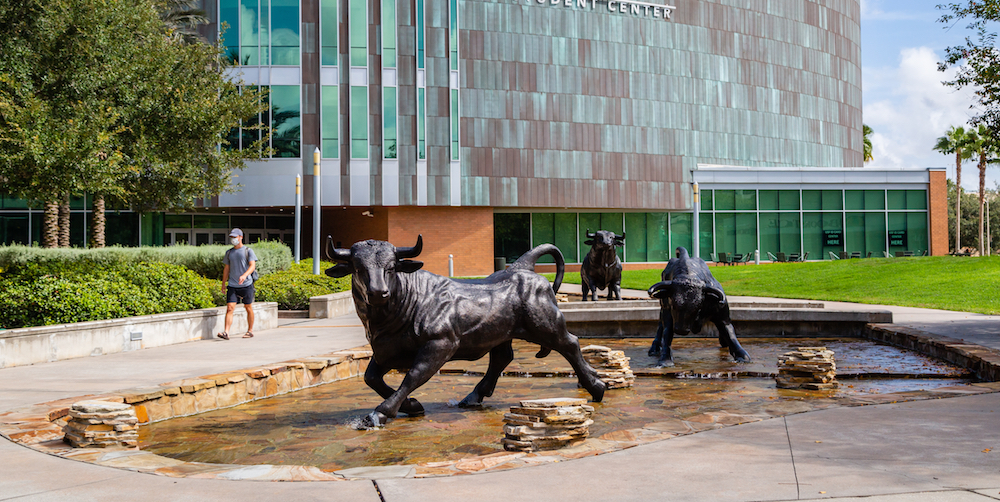

RTG Overview
Learn how the RTG is structured, what research areas it supports, and how it fits into the broader center.
Go to RTG Overview
The USF Cryptography Center supports a research ecosystem spanning year-round training, summer programs, seminars and workshops, and outreach.
How the pieces fit together
The Center for Cryptographic Research is not built around a single activity. It brings together research, mentoring, community, and public-facing education through a set of connected programs. Students and visitors may first encounter the center through a summer REU, a seminar talk, a workshop, an outreach initiative, or the RTG in Applied Algebra, but these activities are designed to reinforce one another.
Faculty, students, postdocs, and collaborators working across cryptography, coding theory, and quantum information.
A year-round training environment with vertically integrated mentoring and research activity.
A summer entry point for undergraduates to participate in authentic research projects.
Recurring seminars, workshops, and educational initiatives that broaden participation and sustain community.
Flagship Program
The RTG in Applied Algebra is the center’s flagship training initiative. It brings together undergraduates, graduate students, postdoctoral researchers, and faculty in a sustained research community organized around cryptography, coding theory, quantum computing, and neighboring areas of applied algebra.
Rather than functioning as a stand-alone fellowship page, the RTG anchors a broader ecosystem that includes seminars, workshops, collaborative mentoring, and visible connections to the center’s research mission.

Learn how the RTG is structured, what research areas it supports, and how it fits into the broader center.
Go to RTG OverviewMeet the faculty, trainees, and collaborators who make up the RTG community in applied algebra at USF.
View RTG MembersFind current guidance for undergraduates, graduate students, and postdoctoral applicants interested in the RTG.
See Application Page
Summer Research
The REU Site provides an entry point for undergraduates to join the center’s research environment through a summer program built around authentic projects, close faculty mentoring, seminars, and professional development.
The REU complements the RTG by broadening access to research and helping students move from coursework into mathematical and cryptographic investigation in a structured, collaborative setting.
Seminars & Workshops
In addition to formal training programs, the center supports recurring events that bring together faculty, trainees, and visitors around active topics in cryptography, coding theory, quantum computing, and applied algebra.
A regular seminar series supporting the RTG’s research culture through expository and research-oriented talks.
View Seminar PageA workshop series at USF connecting researchers and trainees across cryptography, coding theory, quantum computing, and related areas.
Visit Workshop SeriesBrowse the current Applied Algebra Days edition, including program, practical information, and contact details.
Current EditionEducation & Outreach
The center’s activities extend beyond formal research programs. Educational and outreach efforts help introduce broader communities to modern cryptography, support local and regional engagement, and create additional pathways into the field.
Programs and initiatives that help students move from coursework into research participation and research communities.
Public-facing activities, instructional resources, and events that make contemporary cryptography more accessible.
Efforts aligned with the center’s mission to expand access to research and training opportunities in cybersecurity and cryptography.
Quick Links
See the RTG overview and current application guidance.
RTG ApplicationLearn what the REU offers and the kind of projects students work on.
REU OverviewBrowse the seminar page and workshop series for current activity.
SeminarsGo directly to the current Applied Algebra Days pages.
Workshop Info